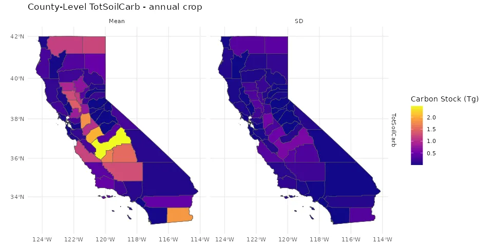
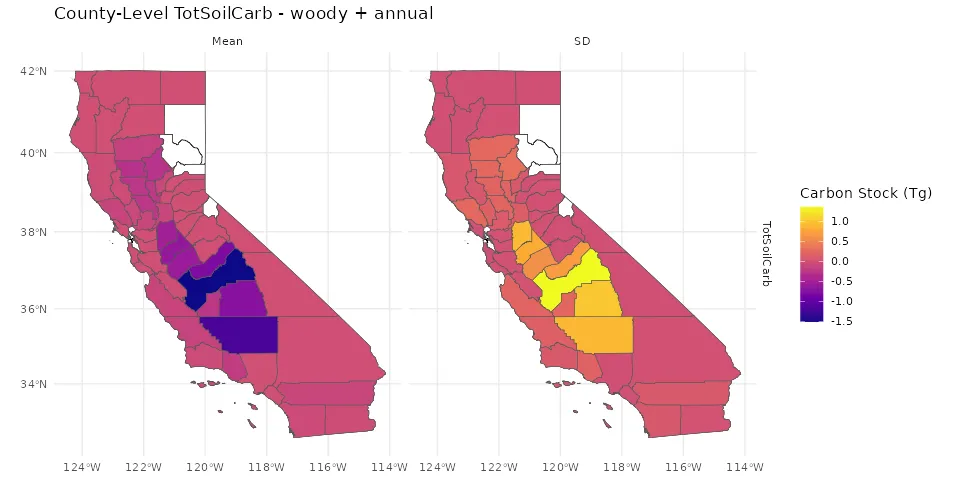
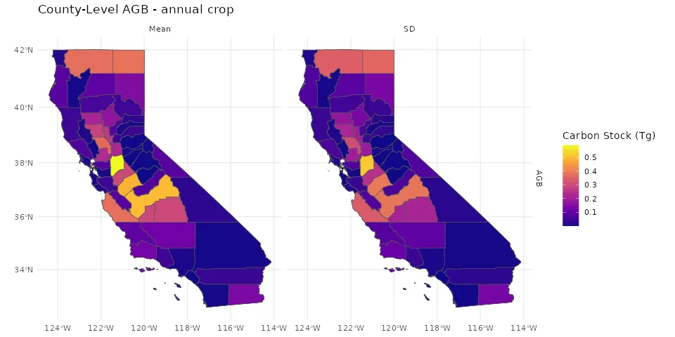
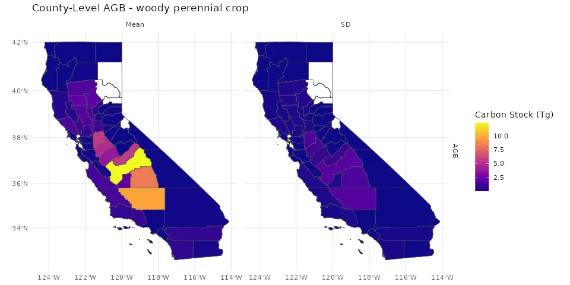
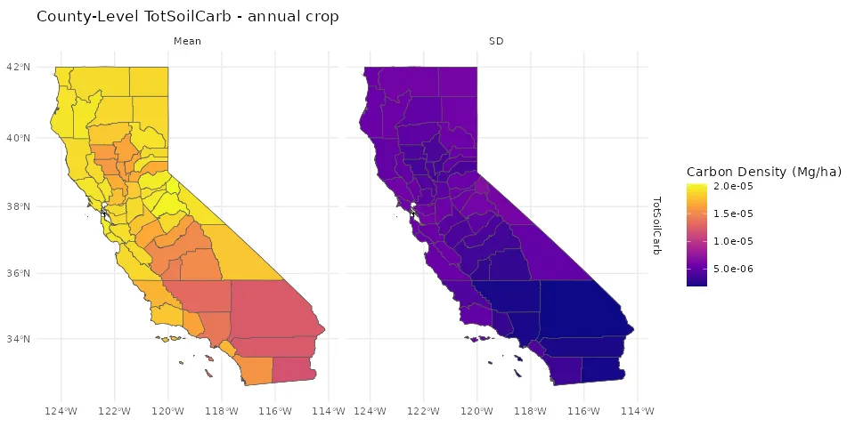
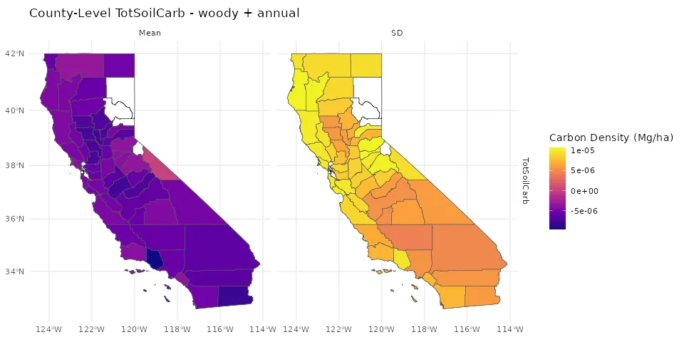
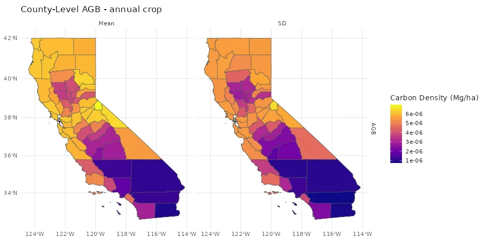
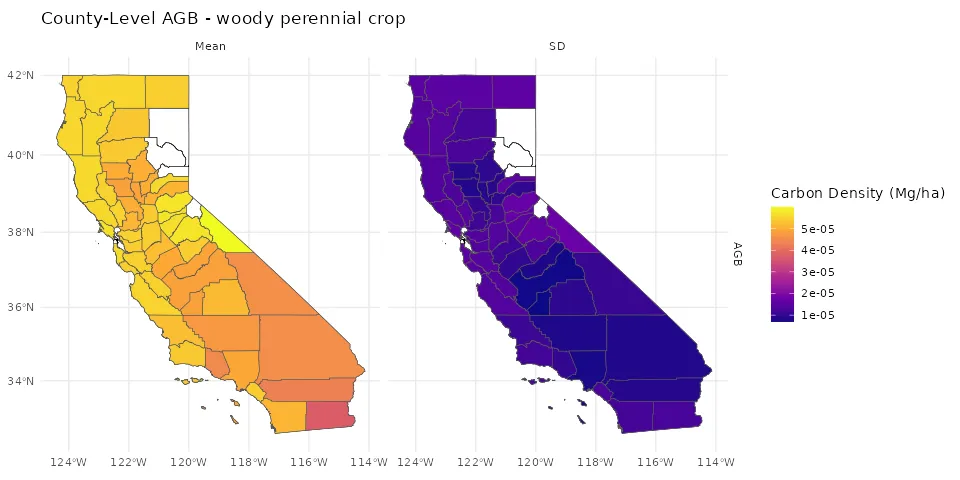
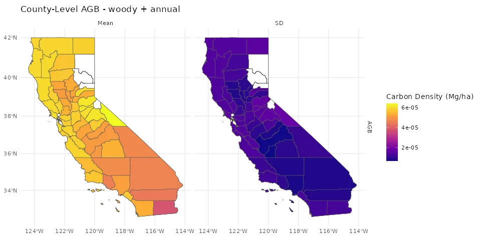

Downscaling Results and Analysis
Overview
Here we present results of aggregating from field scale pool sizes to county-level estimates of county-level carbon stocks and densities for soil carbon stocks to 30cm and aboveground biomass.
Not validated, for illustrative purposes only.
For detailed information about methods and workflow, see the Workflow Documentation.
Estimates for woody and mixed woody + annual systems are done for all fields in the LandIQ dataset with tree and vinyard crops; estimates for annual systems are done for all fields with herbaceous annual crops.
In the mixed scenario, ground cover is planted in all orchards. The methods for simulating the addition of ground cover to orchards are described in Mixed System Prototype. Briefly, it combines downscaled model outputs from the woody perennial crop and annual crop PFTs to represent the effect of ground cover on carbon pools.
Results
County-Level Carbon Stocks and Densities
The maps below are organized to compare across PFTs. First we show total county carbon (Stocks, Tg), then area‑normalized density (Density, Mg/ha), each split by carbon pool and PFT.
Stocks
Soil Carbon (TotSoilCarb)
Annual Crop

Woody Perennial Crop (Orchards & Vineyards)
Woody + Annual (Orchards & Vineyards with Ground Cover)

Aboveground Biomass (AGB)
Annual Crop

Woody Perennial Crop (Orchards & Vineyards)

Woody + Annual (Orchards & Vineyards with Ground Cover)

Density
Soil Carbon (TotSoilCarb)
Annual Crop

Woody Perennial Crop (Orchards & Vineyards)

Woody + Annual (Orchards & Vineyards with Ground Cover)

Aboveground Biomass (AGB)
Annual Crop

Woody Perennial Crop (Orchards & Vineyards)

Woody + Annual (Orchards & Vineyards with Ground Cover)

Tables: County Stocks and Density (by PFT) and PFT Comparison
The first table summarizes county-level metrics for each PFT. The second table pivots carbon pools to highlight differences across cropping systems..